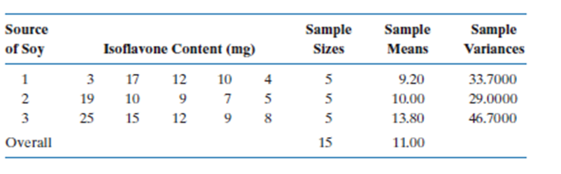

n1 <- 36
x_bar1 <- 23.4
sd1 <- 7.2
t_star <- qnorm(0.98) #for n>30 and unknown sigma, we use standard normal distribution
SE <- sd1 / sqrt(n1)
Upper <- x_bar1 + t_star * SE
Lower <- x_bar1 - t_star * SE
Upper[1] 25.8645Lower[1] 20.9355A physician wanted to estimate the mean length of time µ that a patient had to wait to see him after arriving at the office. A random sample of 36 patients showed a mean waiting time of 23.4 minutes and a standard deviation of 7.2 minutes. Find a 96% confidence interval for µ.
R/
n1 <- 36
x_bar1 <- 23.4
sd1 <- 7.2
t_star <- qnorm(0.98) #for n>30 and unknown sigma, we use standard normal distribution
SE <- sd1 / sqrt(n1)
Upper <- x_bar1 + t_star * SE
Lower <- x_bar1 - t_star * SE
Upper[1] 25.8645Lower[1] 20.9355We are 96% confident that the true mean waiting time at the physician’s office is between (20.94, 25.86) minutes.
It is hoped that a newly developed pain reliever will more quickly produce perceptible reduction in pain to patients after minor surgeries than a standard pain reliever. The standard pain reliever is known to bring relief in an average of 3.5 minutes. To test whether the new pain reliever works more quickly than the standard one, 50 patients with minor surgeries were given the new pain reliever and their times to relief were recorded. The experiment yielded sample mean x ̅=3.1 minutes and sample standard deviation s = 1.5 minutes. Is there sufficient evidence in the sample to indicate, at the 5% level of significance, that the newly developed pain reliever does deliver perceptible relief more quickly?
R/
mu_0 <- 3.5 #standard pain reliever time
n2 <- 50
x_bar2 <- 3.1
sd2 <- 1.5\[H_o : \mu_2 = \mu_0\] \[H_a : \mu_2 < \mu_0\]
t_obs <- (x_bar2 - mu_0) / (sd2 / sqrt(n2))
t_obs[1] -1.885618t_s <- qt(0.05, n2 - 1)
t_s[1] -1.676551t_obs < t_s [1] TRUEpt(t_obs, n2-1, lower.tail = T) < 0.05 #alpha[1] TRUEAs \(t_{obs} < t_s\) is true for a lower tailed test, we reject the null hypothesis, and we have strong evidence to conclude that the recovery time for the new pain reliever is shorter than the standard pain reliever.
A software company markets a new computer game with two experimental packaging designs. Design 1 is sent to 11 stores; their average sales the first month is 52 units with sample standard deviation 12 units. Design 2 is sent to 6 stores; their average sales the first month is 46 units with sample standard deviation 10 units.
a.
Construct a point estimate and a 95% confidence interval for the difference in average monthly sales between the two package designs assuming σ_1^2 = σ_2^2.
R/
nd1 <- 11
x_bard1 <- 52
sd_d1 <- 12
nd2 <- 6
x_bard2 <- 46
sd_d2 <- 10
df <- nd1 + nd2 - 2
PE <- x_bard1 - x_bard2
PE[1] 6Sp2 <- ((nd1 - 1) * sd_d1^2 + (nd2 - 1) * sd_d2^2) / df
Sp2[1] 129.3333SE <- sqrt(Sp2* ( 1/nd1 + 1/nd2 ))
SE[1] 5.771753t_star <- qt(0.025, df, lower.tail = F)
t_star[1] 2.13145Upper <- PE + SE * t_star
Upper[1] 18.3022Lower <- PE - SE * t_star
Lower[1] -6.3022We are 95% confident that the true difference in the mean monthly sales with design 1 and design 2 is between -6.3 and 18.3. This means that the mean monthly sales of the new computer game for the packaging with design 1 is between 18.3 higher, and -6.3 lower than the sales for design 2.
b.
Test at the 1% level of significance (assuming σ_1^2 = σ_2^2 ) whether the data provide sufficient evidence to conclude that the mean sales per month of the two designs are different. Use the critical value approach.
R/
\[H_o : \mu_1 - \mu_2 = 0\] \[H_a : \mu_1 - \mu_2 \neq 0\]
t_d12 <- (PE - 0) / SE
t_d12[1] 1.039546t_crit <- qt(1-0.005, df)
t_crit[1] 2.946713t_d12 >= t_crit[1] FALSEBased on the data, We fail to reject the null hypothesis, and have weak evidence to conclude that the true mean sales per moth of the two designs are different, considering a 1% of significance.
Gardener is interested in studying the relationship between fertilizer and tomato yield. The gardener has two gardens (1 and 2). He divides each into 9 plots. Three fertilizer application rates (3, 5, and 7 units/acre) are assigned to the plots in garden 1 in a completely randomized fashion. The same three fertilizer application rates (3, 5, and 7 units/acre) are assigned to the plots in garden 2 in a completely randomized fashion. Thus, there are three plots for each combination of garden and fertilizer application rate.
a.
Is this an example of experimental or observational study?
R/ This is an experimental study
b.
What study design was employed in this study?
R/ It is block design
c.
Identify the following:
d.
How many replications are there for each treatment?
R/ There are 3 replicates for each treatment within each block
A horticulturist was investigating the phosphorous content of tree leaves from three different varieties of apple trees (A, B, and C). For each variety, leaf samples were taken from each of 8 trees. The phosphorous content in the leaf sample was separately measured for each tree. One sample from variety C was inadvertently destroyed before the phosphorous measurement could be taken. Thus, there were 8 phosphorous measurements for each of varieties A and B, and 7 phosphorous measurements for variety C. The mean and variance of phosphorous measurements for each variety are provided below.
| Variety | Mean | Variance | Sample size |
|---|---|---|---|
| A | 72 | 312 | 8 |
| B | 68 | 310 | 8 |
| C | 55 | 321 | 7 |
a.
Provide an ANOVA table with columns for Source, Degrees of Freedom, Sum of Squares, and Mean Squares.
R/
nt <- 8 + 8 + 7
a <- 3
yt <- (8 * 72 + 8 * 68 + 7 * 55) / nt
SStr <- 8 * ( 72 - yt ) ^ 2 + 8 * ( 68 - yt ) ^ 2 + 7 * ( 55 - yt ) ^ 2
SStr[1] 1159.652SSe <- ( 8 - 1) * 312 + ( 8 - 1) * 310 + ( 7 - 1) * 321
SSe[1] 6280MStr <- SStr / (a - 1)
MStr[1] 579.8261MSe <- SSe / (nt - a)
MSe[1] 314SST <- SStr + SSe
SST[1] 7439.652F_v <- MStr / MSe
F_v[1] 1.84658P_v <- 1 - pf(F_v, a - 1, nt - a )
P_v[1] 0.1836835| Source of variation | df | SS | MS | F-value | P-value |
|---|---|---|---|---|---|
| Between | 2 | 1159.65 | 579.83 | 1.85 | 0.184 |
| With-in (Error) | 20 | 6280 | 314 | ||
| Total | 22 | 7439.65 |
b.
Do you think the leaves of all three varieties have the same mean phosphorous content? Provide a test statistic and an approximate p-value to support your answer.
R/
\[
H_o : \mu_A = \mu_B = \mu_C
\] \[
H_a : At\:least\:one\: \mu_i \neq \mu_j \:; for \: i\neq j
\]
F_cr <- qf(1-0.05, a - 1, nt - a )
F_cr[1] 3.492828The probability of getting this results under the assumption of the null hypothesis is higher compared to the \(\alpha = 0.05\), we fail to reject the null hypothesis, and have weak evidence to conclude that at least one of the mean phosphorous content from one tree variety is different from the others.
To study the effects of pesticides on birds, an experimenter randomly and equally allocated 65 chicks to five diets (a control and four with a different pesticide included). After a month each chick’s calcium content (mg) in 2 cm length of bone was measured resulting in the following:
| Control | Pesticide 1 | Pesticide 2 | Pesticide 3 | Pesticide 4 | |
|---|---|---|---|---|---|
| Mean | 11.54 | 11.00 | 11.42 | 11.44 | 11.28 |
| St. Dev | 0.27 | 0.47 | 0.31 | 0.42 | 0.31 |
Construct the ANOVA table (i.e., compute the between and with-in SS) and test if there appears to be any difference in means (use \(\alpha = 0.01\))
R/
nt2 <- 65
a2 <- 5
yt2 <- ( 11.54 + 11.00 + 11.42 + 11.44 + 11.28) *13 / nt2
SStr2 <- 13 * ( 11.54 - yt2 ) ^ 2 + 13 * ( 11.00 - yt2 ) ^ 2 +
13 * ( 11.42 - yt2 ) ^ 2 + 13 * ( 11.44 - yt2 ) ^ 2 +
13 * ( 11.28 - yt2 ) ^ 2
SStr2[1] 2.28176SSe2 <- ( 13 - 1) * (0.27 ^ 2 + 0.47 ^ 2 + 0.31 ^ 2 + 0.42 ^ 2 + 0.31 ^ 2 )
SSe2[1] 7.9488MStr2 <- SStr2 / (a2 - 1)
MStr2[1] 0.57044MSe2 <- SSe2 / (nt2 - a2)
MSe2[1] 0.13248SST2 <- SStr2 + SSe2
SST2[1] 10.23056F_v2 <- MStr2 / MSe2
F_v2[1] 4.305857P_v2 <- 1 - pf(F_v2, a2 - 1, nt2 - a2 )
P_v2[1] 0.003963222| Source of variation | df | SS | MS | F-value | P-value |
|---|---|---|---|---|---|
| Between | 4 | 2.28 | 0.57 | 4.31 | 0.004 |
| With-in (Error) | 60 | 7.95 | 0.13 | ||
| Total | 64 | 10.23 |
\[ H_o : \mu_C = \mu_1 = \mu_2 = \mu_3 = \mu_4 \] \[ H_a : At\:least\:one\: \mu_i \neq \mu_j \:; for \: i\neq j \] Based on the P-value obtained (0.004), under the assumption of the null hypothesis, the probability for the values obtained to happen is very low compared to our significance value (\(\alpha = 0.01\)), therefore we reject the null hypothesis, and we have strong evidence to conclude that at least one of the mean calcium content in the chickens bones is different than the other means.
A large body of evidence shows that soy has health benefits for most people. Some of these benefits come largely from isoflavones, plant compounds that have estrogen-like properties. The amount of isoflavones varies widely depending on the type of food processing. A consumer group purchased various soy products and ran laboratory tests to determine the amount of isoflavones in each product. There were three major categories of soy products: cereals and snacks (1), energy bars (2), and veggie burgers (3). Five different products from each of the three categories were selected, and the amount of isoflavones (in mg) was determined for an adult serving of the product. The consumer group wanted to determine if the average amount of isoflavones was different for the three sources of soy products. The data are given in Table below. Use these data to test the research hypothesis of a difference in the mean isoflavone levels for the three categories. Use a \(\alpha = 0.05\).
library(tidyverse)
isocontent = c(3, 17, 12, 10, 4, 19, 10, 9, 7, 5, 25, 15, 12, 9, 8)
source = c(rep("1",5), rep("2",5), rep("3",5))
isoflavone = data.frame(isocontent,source)
group1 <- c(3, 17, 12, 10, 4) # Cereals and Snacks
group2 <- c(19, 10, 9, 7, 5) # Energy Bars
group3 <- c(25, 15, 12, 9, 8) # Veggie Burgers
category <- factor(rep(c("Cereals", "Energy Bars", "Veggie Burgers"), each = 5))
isoflavones <- c(group1, group2, group3)
a.
Using R verify that the sample sizes, means, and variances are correct.
R/
isoflavone |>
group_by(source)|>
summarise(Sample_size = n(), Sample_means = mean(isocontent),
Sample_variance = var(isocontent))# A tibble: 3 × 4
source Sample_size Sample_means Sample_variance
<chr> <int> <dbl> <dbl>
1 1 5 9.2 33.7
2 2 5 10 29
3 3 5 13.8 46.7isoflavone |>
summarise(Overall_size = n(), Overall_means = mean(isocontent)) Overall_size Overall_means
1 15 11b.
Using R produce the boxplot and make your comments.
isoflavone |>
ggplot(aes(x = source, y = isocontent)) +
theme_bw() +
labs( x = "Source of soy",
y = "Isoflavones content (mg)",
title = "Isoflavones content of different soy products - Problem 7",
subtitle = "Yefrid Cordoba")+
scale_x_discrete(labels = c("1" = "Cereals and snacks",
"2" = "Energy bars",
"3" = "Veggie burgers"))+
geom_boxplot()
Veggie burgers tend to have the highest typical isoflavones content and it includes an especially high outlier, while energy bars show the least variable isoflavones content, centered just under 10 mg. Cereals and snacks are highly variable with values ranging from low to moderately high.
c.
Test the hypothesis: \[
H_o : \mu_1 = \mu_2 = \mu_3
\] \[
H_a : At\:least\:one\: \mu_i \neq \mu_j \:; for \: i\neq j
\]
anova_model <- aov(isocontent ~ source, data = isoflavone)
summary(anova_model) Df Sum Sq Mean Sq F value Pr(>F)
source 2 60.4 30.20 0.828 0.46
Residuals 12 437.6 36.47 Given the high probability of this results to happen, being larger than the significance level for the analisys, under the assumption of the null hypothesis, we fail to reject the null hypothesis and conclude that we have weak evidence to conclude that there is a true difference in the mean content of isoflavones from one of the sources compare to the others.